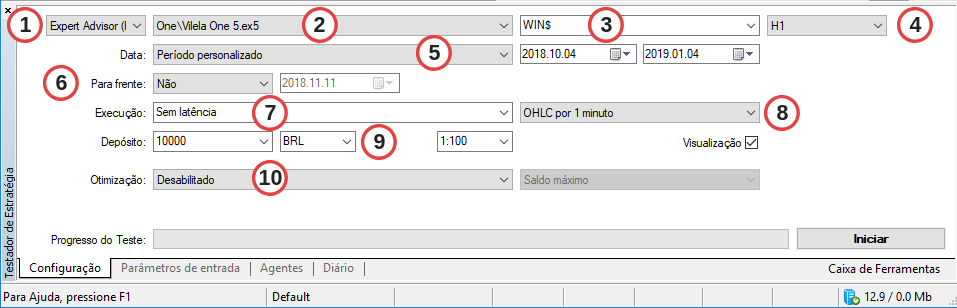
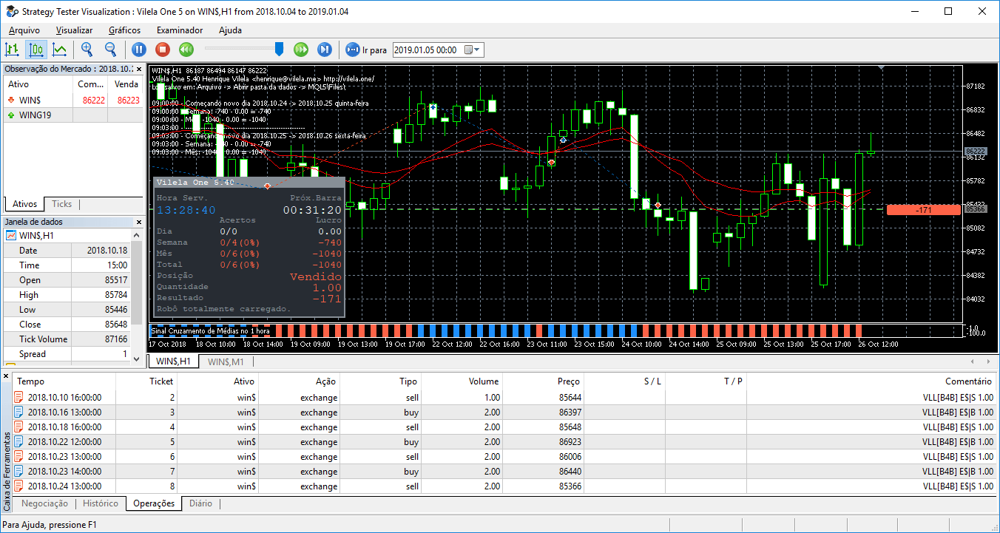

O básico sobre backtest
Backtest no MetaTrader 5
Como se trata de uma plataforma all in one, também exista a possibilidade de realizar um backtest no MetaTrader 5 com robôs e ativos específicos. Com isso, é possível verificar usando dados históricos reais como funcionaria a estratégia definida por você. No entanto, sempre vale lembrar que ganhos passado não são garantia de sucesso em operações futuras. É sempre importante monitorar as configurações e fazer os ajustes necessários.
Para um melhor aproveitamento deste conteúdo é necessário que você saiba instalar um robô no MetaTrader. Caso tenha dúvidas, temos um outro post publicado aqui ensinando este passo a passo.
As configurações
Para acessar o recurso de teste da plataforma escolha a opção “Exibir” -> “Testador de Estratégia” no menu superior. Como resultado, será aberta a janela abaixo:

Opções
As informações relevantes para configuração do teste são:
-
Primeiramente é necessário definir se o teste é para um “Expert Advisor” (Robô) ou para um “Indicador”.
-
Em seguida, no caso de ter escolhido um robô, basta selecionar qual será usado no teste. É preciso que você tenha o robô instalado no seu ambiente, como vimos em posts anteriores. O robô escolhido neste passo influencia na guia “Parâmetros de entrada”, onde você vai fazer as configurações.
-
Em seguida, vamos definir que ativo será tentado.
-
Além disso, temos que definir o timeframe do teste. Vamos testar com tickets a cada 15 minutos (M15), meia hora (M30), 1 hora (H1), 8 horas (H8), etc. Existem diversas opções disponíveis.
-
Podemos definir também o período, considerando opções de períodos fechados (“Último mês”, “Último ano”) ou com “Período personalizado”, onde se define data de início e fim do teste.
-
Opção “Para frente”, permite realizar testes avançados. Vamos falar sobre este recurso no futuro, em outros posts, por isso por enquanto basta deixar seleciona a opção padrão “Não”.
-
Também é possível incluir latência nas suas ordens, para aproximar de um cenário real. Isto porque numa conta real existe uma latência entre o envio da ordem e a execução em si. De qualquer forma, vamos deixar a opção “Sem latência” selecionado.
-
Use este campo para definir se o teste usará que conjunto de ticks, considerando as opções:
-
cada um dos ticks entre o maior preço e o menor preço;
-
todos os ticks reais do histórico da corretora;
-
os preços de abertura, fechamento, maior tick e menor tick (OHLC – Open, High, Low e Close). Está será a opção que vamos utilizar;
-
apenas preços de abertura;
-
cálculos matemáticos, usados para robôs específicos.
-
-
Em seguida é necessário confirmar o valor do depósito que será usado no teste e a moeda. Caso a opção de real brasileiro não esteja disponível, basta digitar “BRL”.
-
Opção de otimização. Vamos deixar desabilitado por enquanto, pois será tratado no próximo vídeo.
Visualização do teste
Depois que forem definidos todos esses campos basta clicar no botão “Iniciar” para começar os testes. Assim sendo, será exibida uma tela abaixo, onde pode ser visto o passo a passo no gráfico, além de informações de operações que foram realizadas.

O vídeo abaixo mostra em detalhes todo o passo a passo desta configuração, além de mostrar a visualização da execução de um teste. Não deixe de assinar o canal e ativar as notificações, para ser avisado de novos conteúdos como este.